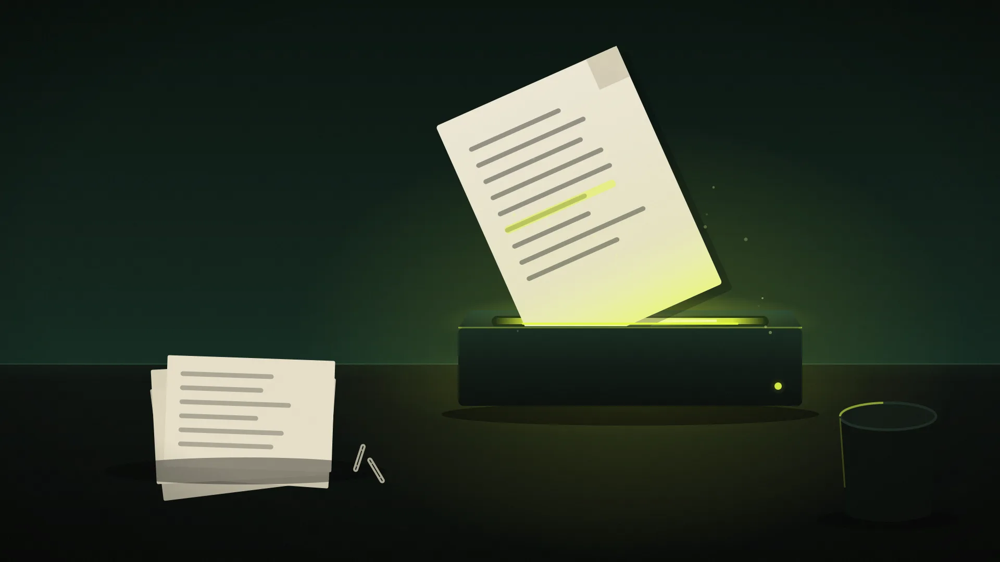

AI-curious? This is the bit no one tells you.
Stop typing questions into AI. Start pasting things in. The free habit that beats any productivity app you've ever downloaded.

How deep do you want to go? Pick a level and the article rewrites itself.
You've probably had a poke at ChatGPT or Gemini. Maybe asked it a question or two. Closed the tab. Got on with your day.
That's fair. But you're missing the bit that actually makes a difference, and it's the easiest bit of the lot.
You don't need to learn anything. You don't need to pay for anything. You just need to stop typing questions and start pasting things in.
Paste what's on your screen.
This is the one that converts most people. Once you've done it twice, you won't go back.
Got a confusing error message popping up on your laptop? Highlight it, copy it, paste it into a free AI tool, and ask what's going on. You'll usually get the answer, and the fix, in plain English.
Reading something dense and not quite following? Copy the paragraph. Paste it. Ask “what does this actually mean?” You'll get it explained in two sentences without anyone making you feel daft.
Got a chunk of data on screen that you need to do something with? Paste it. Tell the AI what you want. Job done.
This single habit will save you more time than any productivity app you've ever downloaded.
Tidying up data from different places.
Spreadsheet of products in one file. Prices in another. Supplier details sitting in an email.
Normally that means VLOOKUPs, XLOOKUPs, or copying and pasting until your eyes water.
Drop all three into a free AI tool and ask it to merge them by product code. Two minutes later you've got one clean table you can paste straight into Excel.
No formulas. No fighting with Excel. Just: “here are my three lists, please give me one combined table.”
Pulling tables out of PDFs.
This one is genuinely satisfying the first time you try it.
You've got a PDF with a useful table buried in it: a supplier price list, a report, a council document. Selecting and copying never works properly. You either get one long line of text or formatting that breaks the moment it hits Excel.
Drop the PDF into the AI tool. Ask: “extract the table on page 3 and give it to me in a format I can paste into Excel.”
That's it. Clean table back. Copy, paste, done.
Turning your scribbled notes into something usable.
Meeting just finished. Half-sentences, names without context, three bullet points only you understand.
Paste those messy notes in. Ask for a tidy summary. Or a follow-up email. Or a list of action points.
The trick is giving it your actual notes, not asking it to imagine a meeting.
The free tools worth knowing about.
You don't need to pay for any of this. The free tiers handle everyday use perfectly well.
Pick whichever one feels easiest. They all do roughly the same things. One sensible habit from day one: keep confidential and personal details out of free tools; paste the shape of the problem, not the secrets.
Stop asking AI questions. Start giving it your stuff.
Did this save you time?
Ten seconds, no account. Your entry joins the Reader Ledger once reviewed, filed against this piece, and helps the next reader find it.
// moderated before it appears · no confidential detail in the task field
On the ledger, pending review.
Your 25 minutes a week joins the running total once approved. See the Reader Ledger →
Go deeper, then get the next issue in your inbox.
More practical, evidence-led writing on getting real value from the AI you already have. Subscribe and each new issue lands in your inbox. No hype, no jargon.